1. 测试目的
ESP32-C3 片内 ADC 在 12 dB 衰减下存在明显的非线性。本测试用同一路 ADC（GPIO3）同时输出：
- ESP-IDF 校准值：
adc_cali_create_scheme_curve_fitting()+adc_cali_raw_to_voltage()，使用 eFuse 出厂参数； - 原始码线性值：
raw × 3300 / 4095，即“直接使用”假设。
以万用表读数为真值，量化两者的误差、斜率、INL、噪声、饱和区与 Wi-Fi 干扰，给出实际可用分辨率/精确度建议。
2. 测试环境与方法
2.1 硬件与软件
| 项目 | 配置 |
|---|---|
| 芯片 / 板卡 | ESP32-C3（QFN32，rev v0.4）/ ESP32-C3 SuperMini |
| ADC 输入 | GPIO3（ADC1_CH3，丝印 3） |
| 衰减 / 位宽 | 12 dB / 12 bit |
| 过采样 / 周期 | 64 次 / 50 ms（20 Hz） |
| 输入源 | 103（10 kΩ）多圈精密电位器，3V3/GND 分压，抽头接 GPIO3 |
| 滤波 | 100 nF 对 GND（会话 B 起加入；会话 A 未加） |
| 真值 | SANWA PC700 万用表逐点读数 |
| 固件 | ESP-IDF v5.5.5，USB Serial/JTAG 115200 |
| 上位机 | Python 3.14 + tkinter + matplotlib；host/gui.py |
| Wi-Fi 干扰 | STA 连接指定 Wi-Fi（凭据已隐去）；主机 UDP 广播压测（约 210 pps / 2.4 Mb/s） |
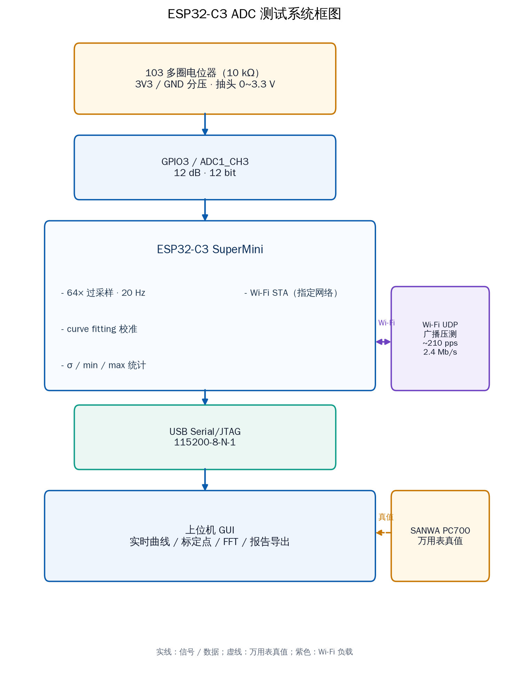
2.2 两次会话
会话 A · 291 点
2026-10-30 14:01 导出
无 100 nF
真值 31.2~3313 mV
291 点（可用 255，饱和 36）
会话 B · 31 点
2026-10-30 16:25 导出（原始 33 点）
加 100 nF
真值 138.5~3315 mV
有效 31 点（可用 26，饱和 5，异常 2）
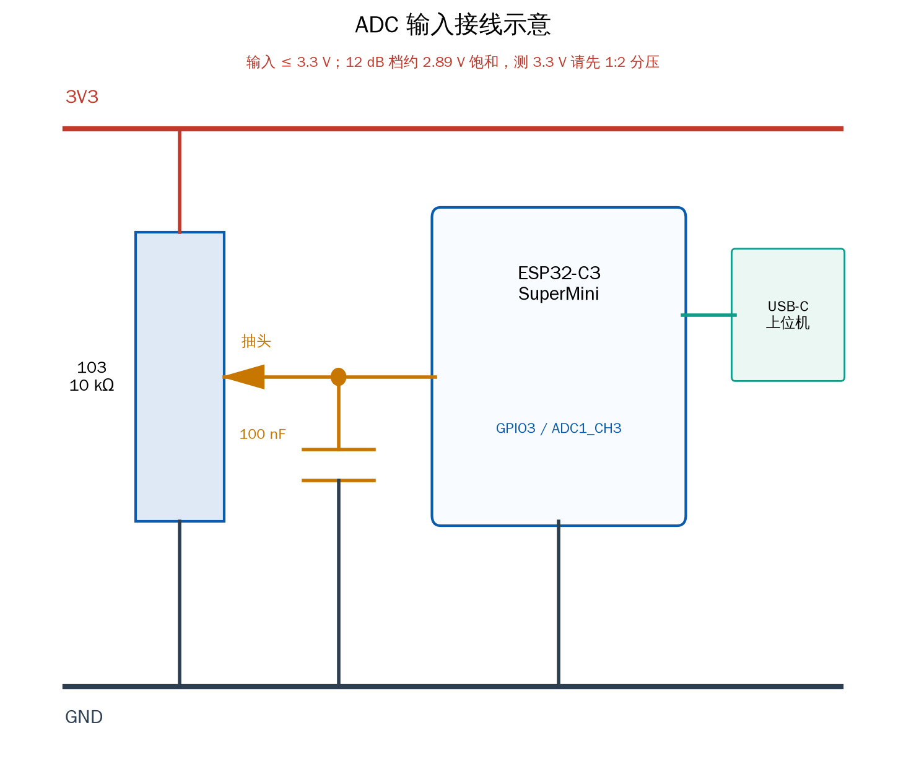
2.3 数据处理
- 误差：
err = measured − true；INL：各自最佳拟合直线的最大残差。 - 饱和判据：
raw ≥ 4090（满量程 4095），该区间不能用于线性度统计。 - 异常点判据：
|线性换算 − 真值| > 1000 mV。正常点线性误差最大约 400 mV，阈值不会误伤；用于排除输错单位/电位器位置不对的点。 - 两点修正：在 IDF 校准值上做
true ≈ a×cal + b，按 0.1~2.7 V 数据拟合。
2.4 实物照片
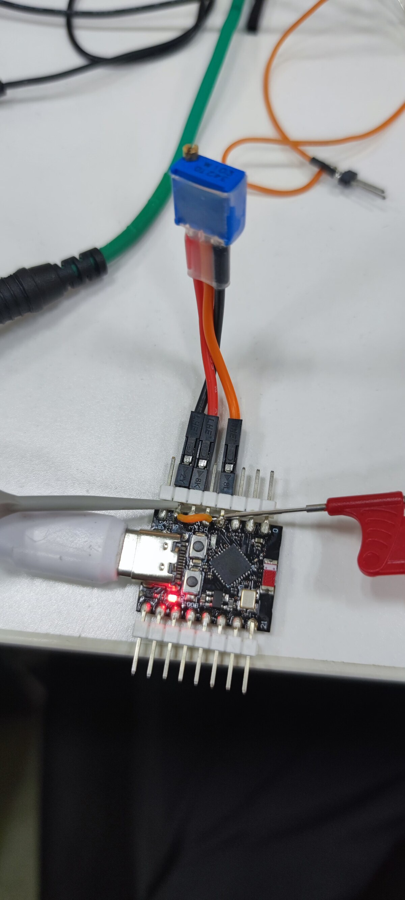
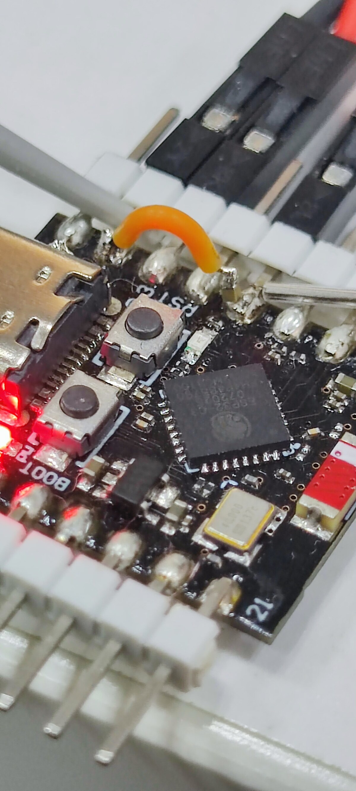
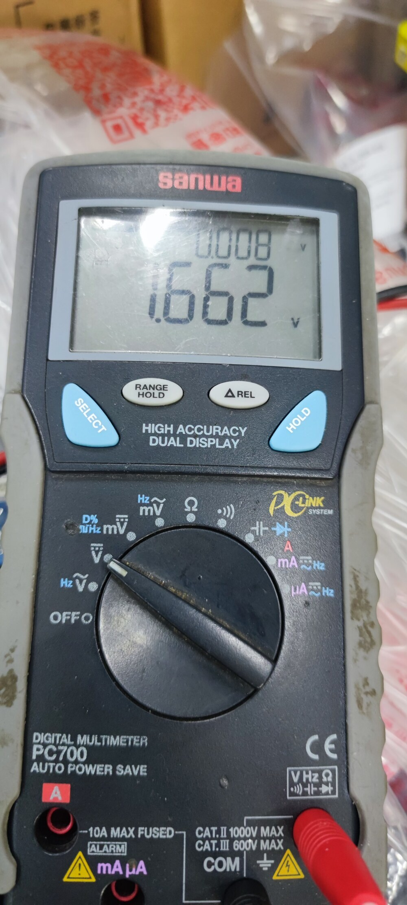
实物照片来自 docs/；系统框图、接线图、流程图由脚本生成，用于说明结构，不代表精确尺寸。
3. 结论摘要
- ESP-IDF 校准远优于原始码线性换算。会话 B（0.1~2.7 V，24 点）：校准 RMS 6.73 mV、max 12.6 mV；线性 RMS 162.6 mV、max 306.0 mV。 RMS / max 均约相差 24 倍。
raw×3300/4095不能直接当电压用。0.5~2.5 V 系统性偏大 +7%~+12%； 2.7 V 处偏大约 +306 mV。- 12 dB 档不能覆盖 0~3.3 V。约 2.89 V 起 raw 饱和在 4095，校准钳在 2940 mV； 实际可用上限约 2.87 V。测 3.3 V 必须外部 1:2 分压。
- 100 nF 是噪声关键。1.65 V 处窗内 σ 从 30.76 mV 降到 1.05 mV， 峰峰值从 249.7 mV 降到 7.3 mV；单窗口 ENOB 从 6.5 bit 提到 11.4 bit。
- Wi-Fi 干扰很小。100 nF 下 Wi-Fi 压测使 σ 从 1.05 mV 升到 1.79 mV （+70%），绝对增量 <1 mV；常规测量可保持开启。
- 两点修正可进一步提高精度。在 IDF 校准上做一次 gain/offset 修正， 0.1~2.7 V 的 max/RMS 可到 5.53 / 3.12 mV。
4. 会话 A：291 点全量程扫描（无 100 nF）
会话 A 用于观察全量程趋势与饱和区。因未加 100 nF，噪声较大，RMS 被抬高； 精度结论应以会话 B 为准。
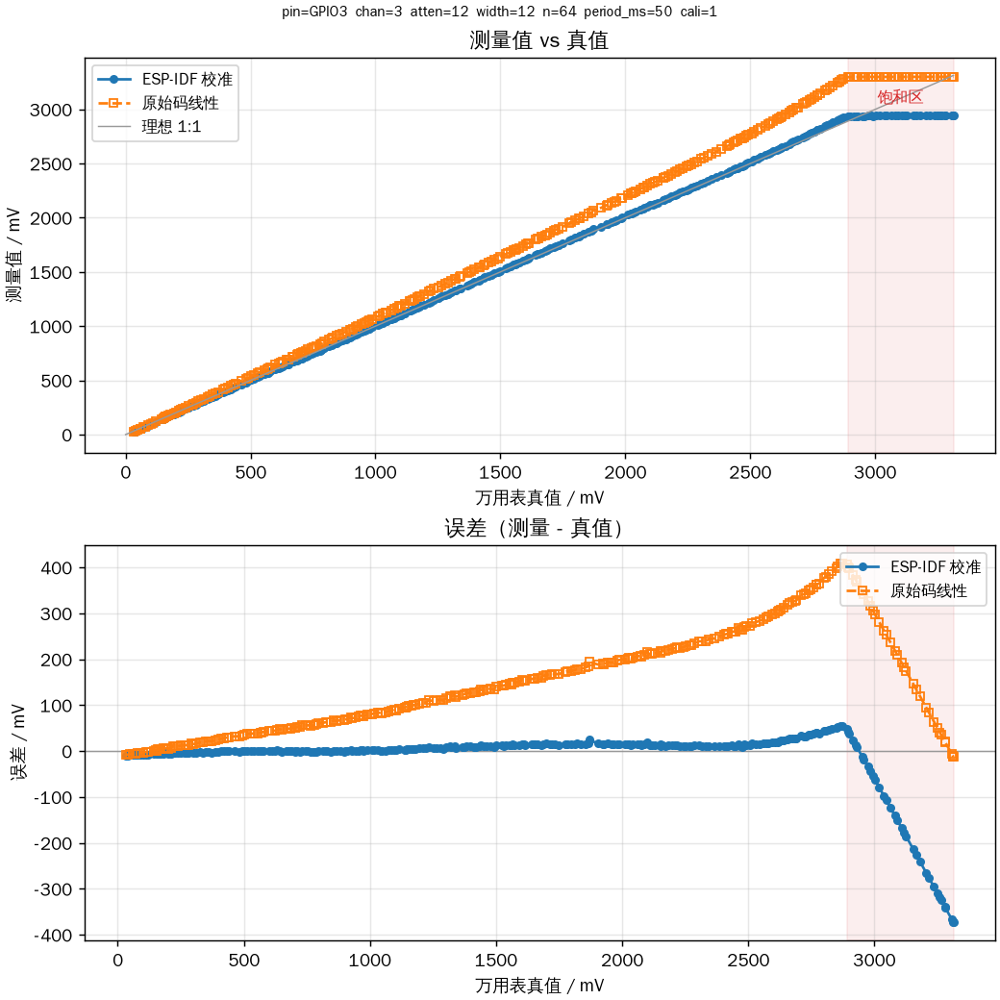
| 真值范围 | 点数 | 校准 max / RMS | 线性 max / RMS |
|---|---|---|---|
| 0.1~2.6 V | 220 | 24.4 / 9.7 mV | 297.4 / 148.4 mV |
| 0.1~2.7 V | 230 | 28.0 / 10.8 mV | 328.5 / 159.4 mV |
| 0.1~2.8 V | 239 | 40.0 / 12.7 mV | 365.0 / 170.7 mV |
| 0.03~2.87 V（raw<4090） | 255 | 54.4 / 15.2 mV | 409.1 / 179.4 mV |
| 含饱和全量程 | 291 | 373.0 / 77.1 mV | 409.1 / 187.9 mV |
5. 会话 B：31 点复测（100 nF）
加 100 nF 后噪声降到 1 mV 级，复测得到更可信的校准残差。原始导出 33 点， 排除 5 个饱和点与 2 个异常点后，得到 26 个可用点；其中 0.1~2.7 V 为 24 点。
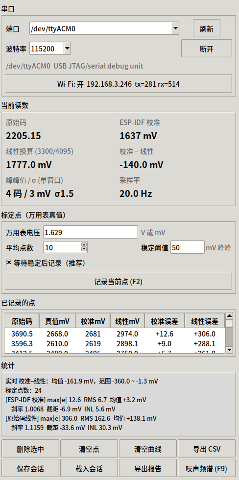
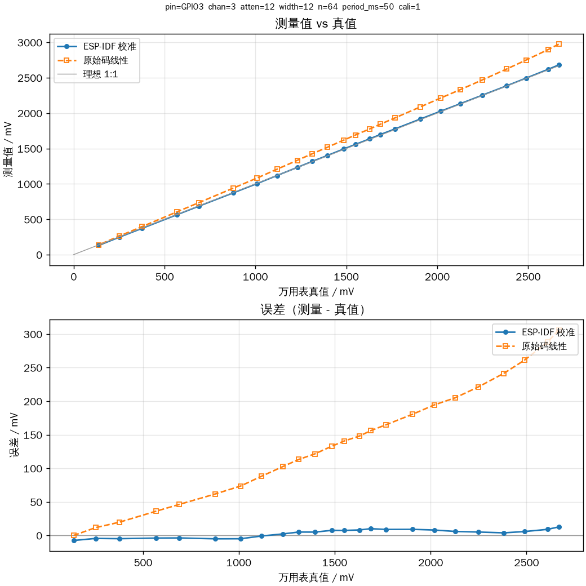
| 真值范围 | 点数 | 校准 max / RMS | 线性 max / RMS | 校准 INL |
|---|---|---|---|---|
| 0.1~2.7 V | 24 | 12.6 / 6.73 mV | 306.0 / 162.6 mV | 5.56 mV |
| 0.1~2.8 V | 25 | 20.3 / 7.74 mV | 336.0 / 172.9 mV | 7.19 mV |
| 0.14~2.87 V | 26 | 40.8 / 11.03 mV | 390.3 / 186.0 mV | 23.11 mV |
5.1 校准残差形态
- 约 0.14 V：-7.6 mV；约 1.1 V 过零；
- 1.5~2.1 V：约 +5~+10 mV；
- 2.76 V：+20.3 mV；2.87 V（接近饱和）：+40.8 mV。
这说明 IDF 校准已经修正了主要非线性，剩余的是一个平滑的系统性残差； 在接近饱和时误差增大。
5.2 两点软件修正
在 IDF 校准值上做 true ≈ 0.99322×cal + 6.85 mV（0.1~2.7 V 拟合），
结果为 max 5.53 mV、RMS 3.12 mV；二次拟合没有明显额外收益。
6. 噪声、100 nF 与 Wi-Fi 干扰
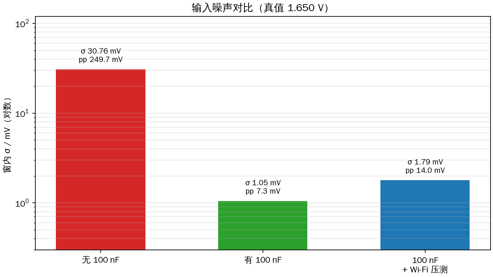
| 场景 | 窗内 σ | 峰峰值（均值） | 单窗口 ENOB | 备注 |
|---|---|---|---|---|
| 无 100 nF，Wi-Fi 关 | 30.76 mV | 249.7 mV | 6.5 bit | 1.650 V |
| 有 100 nF，Wi-Fi 关 | 1.05 mV | 7.3 mV | 11.4 bit | 1.650 V |
| 有 100 nF，Wi-Fi 开 + 压测 | 1.79 mV | 14.0 mV | — | ~210 pps / 2.4 Mb/s |
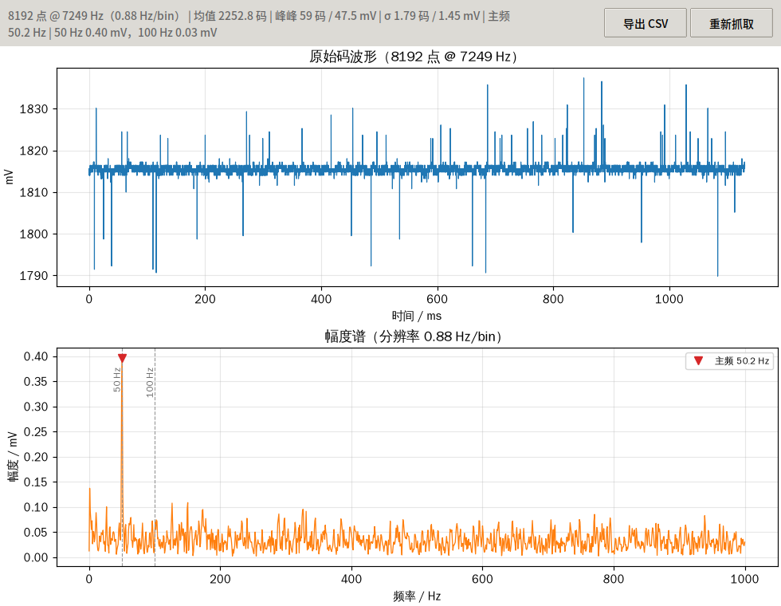
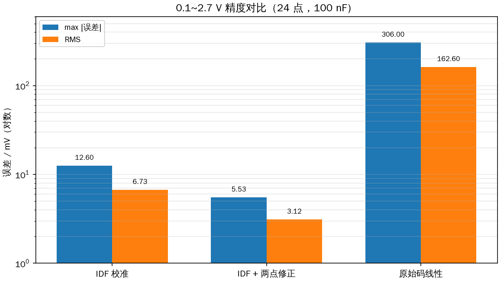
100 nF 前后的差异说明：此前几百 mV 的跳变主要是高阻输入 + 长引线 + 无采样电容 拾取的宽带/脉冲噪声，不是 ADC 本身。加 100 nF 后 50 Hz 也仅 0.40 mV。
7. 分辨率、精确度与量程
7.1 实际可用分辨率
| 指标 | 无 100 nF | 有 100 nF |
|---|---|---|
| 单次 64 点窗口 σ | 25~31 mV | 1.05 mV |
| 10 点平均（0.5 s）σ | 8~10 mV | 约 0.3 mV |
| 单窗口 ENOB（2.7 V 量程） | 6.5 bit | 11.4 bit |
| 0.5 s 平均等效位数 | 约 8.4 bit | 约 12 bit（受校准限制） |
7.2 精确度
| 方案 | max 误差 | RMS | 说明 |
|---|---|---|---|
| IDF 校准（0.1~2.7 V） | 12.6 mV | 6.73 mV | 会话 B，24 点 |
| IDF + 两点修正 | 5.53 mV | 3.12 mV | 同批数据拟合，略乐观 |
| 原始码线性 | 306.0 mV | 162.6 mV | 不可用于测量 |
| 1.650 V 单点 | +21.9 mV | — | 校准 1671.9 mV |
7.3 量程
12 dB 档实测约 2.89 V 饱和：raw=4095，校准 2940 mV，线性 3300 mV。 可用上限约 2.87 V。3.3 V 输入必须外部 1:2 分压， 分压电阻误差（如 1%）会直接叠加。
8. 建议
- 固件/软件：任何电压测量都用
adc_cali_raw_to_voltage()； 不要用raw×3300/4095。需要更高精度时加两点 gain/offset 修正，参数按板/通道/衰减档位单独标定。 - 硬件：100 nF 必加（已验证 σ 30.8→1.05 mV）；缩短引线，检查抽头/GND 接触； 电位器两端加 100 nF 去耦。
- 3.3 V：先 1:2 分压，不要直接接 GPIO3；分压后重新标定。
- 采点：用「稳定判据 + 10 行平均」；有 100 nF 后阈值可设 5~10 mV。 记录前检查真值与 raw 是否大致一致，防止输错单位/位置。
- Wi-Fi：常规测量可保持开启（+0.7 mV RMS）；亚 mV 测量时关闭。
9. 附录：数据文件与复现
9.1 两次会话文件
- 会话 A（291 点，无 100 nF）：
data/session_A_291points/下的adc_points_20261030_140112.csv、adc_session_20261030_140135.json与报告。 - 会话 B（31 点，100 nF；原始 33 点）：
data/session_B_31points/下的adc_points_20261030_162534.csv、adc_session_20261030_162516.json； 清洗文件sweep31/26/24CSV 同目录。
9.2 0.1~2.7 V 的 24 个有效点
| # | 真值 mV | raw | 校准 mV | 线性 mV | 校准误差 | 线性误差 | 两点修正残差 |
|---|---|---|---|---|---|---|---|
| 1 | 2668.0 | 3690.5 | 2680.6 | 2974.0 | +12.60 | +306.0 | -1.28 |
| 2 | 2610.0 | 3596.3 | 2619.0 | 2898.1 | +9.00 | +288.1 | +1.91 |
| 3 | 2489.0 | 3412.5 | 2494.7 | 2750.0 | +5.70 | +261.0 | +4.36 |
| 4 | 2382.0 | 3255.5 | 2385.8 | 2623.5 | +3.80 | +241.5 | +5.53 |
| 5 | 2249.0 | 3065.3 | 2254.0 | 2470.2 | +5.00 | +221.2 | +3.43 |
| 6 | 2128.0 | 2895.1 | 2133.9 | 2333.0 | +5.90 | +205.0 | +1.72 |
| 7 | 2019.0 | 2746.6 | 2027.0 | 2213.4 | +8.00 | +194.4 | -1.11 |
| 8 | 1906.0 | 2589.1 | 1915.0 | 2086.5 | +9.00 | +180.5 | -2.87 |
| 9 | 1767.0 | 2397.2 | 1775.9 | 1931.8 | +8.90 | +164.8 | -3.71 |
| 10 | 1688.0 | 2288.3 | 1698.0 | 1844.1 | +10.00 | +156.1 | -5.34 |
| 11 | 1629.0 | 2205.2 | 1637.1 | 1777.0 | +8.10 | +148.0 | -3.85 |
| 12 | 1550.0 | 2098.1 | 1557.4 | 1690.7 | +7.40 | +140.7 | -3.69 |
| 13 | 1485.0 | 2007.6 | 1492.5 | 1617.9 | +7.50 | +132.9 | -4.23 |
| 14 | 1396.0 | 1882.9 | 1400.9 | 1517.4 | +4.90 | +121.4 | -2.25 |
| 15 | 1313.0 | 1769.8 | 1318.0 | 1426.2 | +5.00 | +113.2 | -2.91 |
| 16 | 1230.0 | 1653.7 | 1232.2 | 1332.6 | +2.20 | +102.6 | -0.70 |
| 17 | 1119.0 | 1498.0 | 1118.1 | 1207.2 | -0.90 | +88.2 | +1.63 |
| 18 | 1009.0 | 1343.3 | 1004.0 | 1082.5 | -5.00 | +73.5 | +4.96 |
| 19 | 877.0 | 1164.9 | 871.9 | 938.7 | -5.10 | +61.7 | +4.16 |
| 20 | 689.0 | 912.2 | 685.2 | 735.1 | -3.80 | +46.1 | +1.60 |
| 21 | 569.3 | 751.3 | 565.3 | 605.4 | -4.00 | +36.1 | +0.98 |
| 22 | 376.7 | 491.8 | 371.8 | 396.3 | -4.90 | +19.6 | +0.57 |
| 23 | 253.5 | 328.9 | 249.0 | 265.1 | -4.50 | +11.6 | -0.66 |
| 24 | 138.5 | 171.7 | 130.9 | 138.4 | -7.60 | -0.1 | +1.64 |
两点修正残差按 true − (0.99322×cal + 6.85) 计算。
9.3 排除点
- 饱和 5 点（会话 B）：真值 3315、3257、3128、3034、2957 mV，raw=4095；
- 异常 2 点：真值 3300/3000 mV，raw 0.30/0.09，线性和≈0，明显输入与读数不同步。
9.4 复现命令
cd ESP32C3_ADC_Linearity # GUI 采集 .venv/bin/python host/gui.py --port /dev/ttyACM0 # 命令行采点 .venv/bin/python host/sweep.py --port /dev/ttyACM0 # 离线分析（自动排除饱和/异常点） .venv/bin/python host/analyze.py data/20261030_sweep24_100nF_0p1-2p7.csv